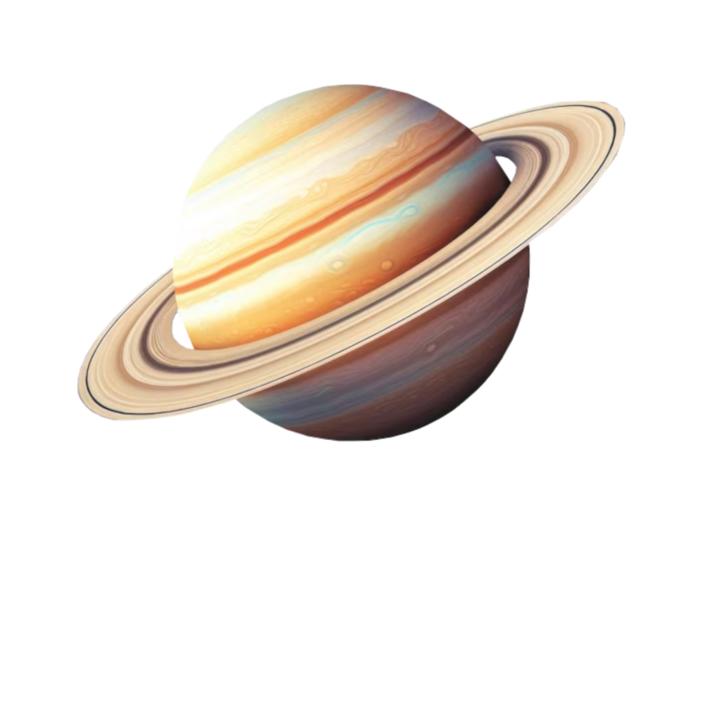

Saturn

-
Rok na Saturnie trwa prawie 30 ziemskich lat. Tyle czasu potrzebuje
planeta na wykonanie pełnego okrążenia Słońca.
-
Dzień na Saturnie trwa 10 godzin 33 minuty i 38 sekund. Oznacza to, że
Saturnowy rok liczy sobie 24,491 dni.
-
Promień równikowy Saturna wynosi 60 268 km. Promień biegunowy jest dużo
mniejszy i wynosi 54 364 km.
-
Saturn ma 83 księżyce. 53 z nich otrzymały oficjalne nazwy. Łącznie z
obiektami księżycopodobnymi ( czyli karłowatymi księżycami ) ta liczba
wynosi około 150.
-
Aż pięć księżyców Saturna posiada średnicę większą niż 1000 kilometrów.
Poza Tytanem są to Rea (1527 km średnicy), Japet (1470 km średnicy),
Dione (1123 km średnicy) i Tetyda (1062 km średnicy). Innymi istotnymi
księżycami Saturna są: Enceladus - lodowy satelita znany z efektownych i
wysokich gejzerów sięgających nawet 2300 km nad powierzchnię księżyca.
Powrót na stronę główną